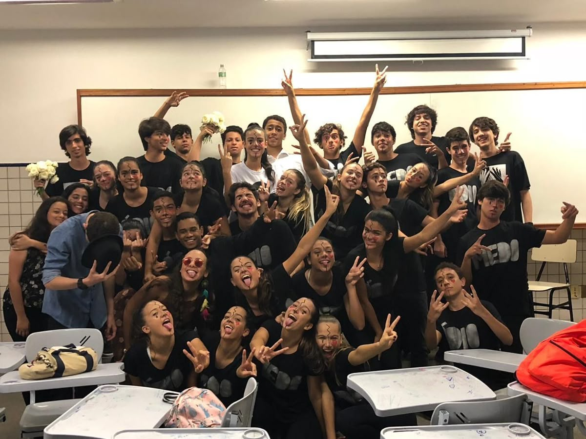

1º Ano

Disciplinas
Características do Primeiro Ano na Etec
No primeiro ano do curso de Desenvolvimento de Sistemas na ETEC, a rotina do estudante é marcada por uma transição direta do papel de mero consumidor de tecnologia para o de criador de softwares. O foco central deste primeiro ciclo é construir uma base sólida de lógica e fundamentos tecnológicos, exigindo que o aluno desenvolva um raciocínio altamente analítico para estruturar a resolução de problemas do mundo real.
A rotina de aprendizado se divide constantemente entre a teoria em sala de aula e a prática intensa nos laboratórios de informática. Nas disciplinas fundamentais, como Programação de Algoritmos, o estudante aprende a pensar como um computador, dominando estruturas de decisão e repetição. Já em Programação Web 1, o aprendizado se volta para a construção visual e funcional de páginas da internet utilizando tecnologias como HTML, CSS e JavaScript. Para dar suporte aos sistemas desenvolvidos, a matéria de Banco de Dados ensina a modelar, organizar e consultar informações de maneira eficiente utilizando comandos em SQL.
Além da parte de software pura, o curso expande a visão do aluno ao introduzir a disciplina de Sistemas Embarcados, na qual a programação se conecta diretamente ao mundo físico através da eletrônica e de componentes como o Arduino. Em paralelo, a disciplina de Computação em Nuvem apresenta a infraestrutura moderna usada pelas grandes empresas, ensinando como os dados e aplicações são implantados e mantidos em servidores remotos.
Todo esse conjunto de conhecimentos técnicos é amarrado pelas disciplinas de Projetos (P.D.S. e P.T.I.C.), nas quais o trabalho em equipe, a documentação e as metodologias ágeis são colocados em prática. Essas matérias simulam a rotina do mercado de trabalho, desafiando os alunos a desenvolverem projetos completos desde a concepção até a entrega. Dessa forma, o primeiro ano proporciona uma formação completa e integrada, preparando o estudante para encarar os desafios mais avançados nos anos seguintes do curso técnico.
Essa imersão técnica exige também uma mudança na postura e nas habilidades comportamentais do estudante. Além da matemática e da lógica, a paciência e a capacidade de resiliência se tornam ferramentas diárias, já que aprender a interpretar erros de sintaxe e depurar códigos faz parte do processo contínuo de aprendizagem.
PróximoAvaliações

- "A adaptação no primeiro ano foi bem puxada por causa da carga horária, mas ver meu primeiro site funcionando nas aulas de Web 1 fez todo o esforço valer a pena. Apanhei um pouco no começo com a lógica de algoritmos, mas a prática constante nos laboratórios me ajudou a pegar o ritmo rapidamente." — Lucas M., 15 anos
- "O curso exige muita responsabilidade e organização para conciliar as matérias tradicionais do ensino médio com as entregas de Banco de Dados e projetos em equipe. Foi um choque no início, mas aprender a programar e lidar com sistemas embarcados abriu totalmente a minha cabeça para o mercado de TI." — Beatriz S., 16 anos
- "Entrei sem saber nada de programação e confesso que fiquei assustada com a dificuldade de Algoritmos nas primeiras semanas. A ajuda dos professores e o trabalho em grupo fizeram toda a diferença para eu me adaptar e pegar confiança. Hoje é incrível olhar para trás e ver que já consigo estruturar meus próprios projetos do zero." — Mariana O., 15 anos
- "A ETEC me surpreendeu pelo foco na prática, já que a gente passa muito tempo no laboratório criando códigos e montando circuitos de verdade. É uma rotina cansativa de estudos, mas ver a teoria virando um sistema funcional é a melhor parte da experiência." — Matheus T., 16 anos